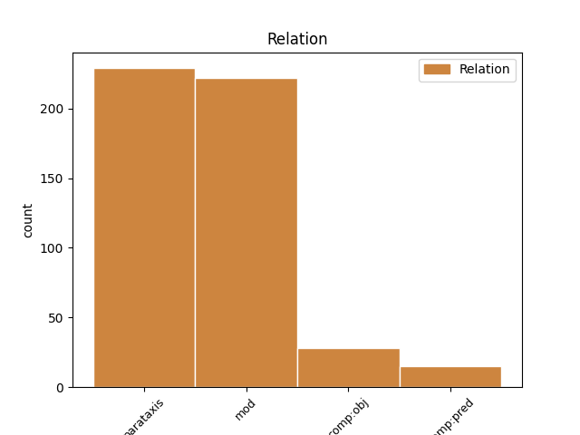
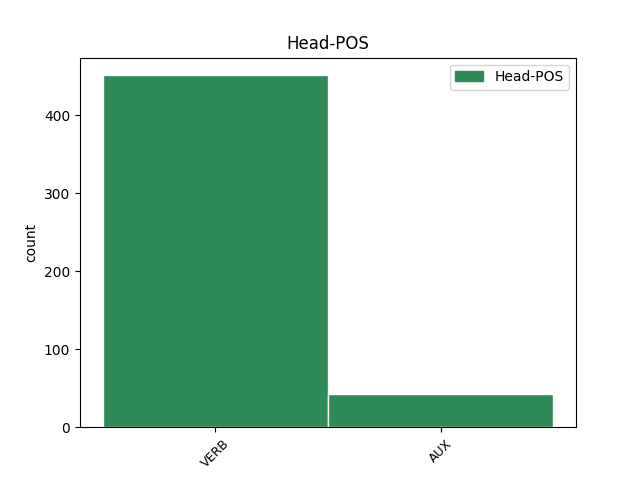
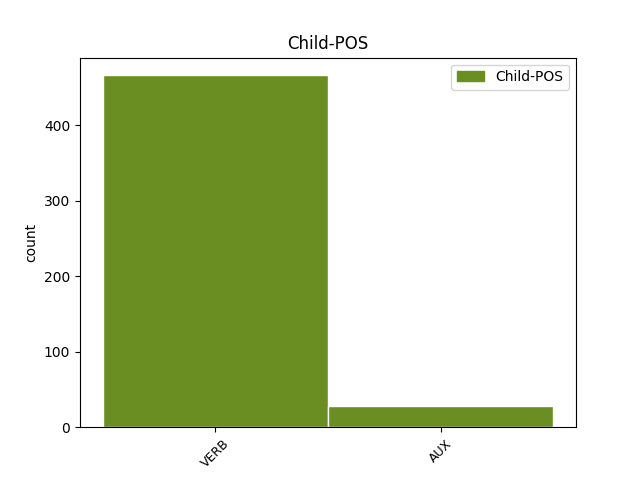

Distribution of features within this leaf



Agreement Rules sorted by frequency.
- When the dependent token is the parataxis(parataxis) of the head token,
1 Он _ _ _ _ 0 _ _ _
2 часто _ _ _ _ 0 _ _ _
3 заявляет заявлять VERB VBC Aspect=Imp|Mood=Ind|Number=Sing|Person=3|Tense=Pres|VerbForm=Fin|Voice=Act 0 _ _ _
4 про _ _ _ _ 0 _ _ _
5 заговоры _ _ _ _ 0 _ _ _
6 феминисток _ _ _ _ 0 _ _ _
7 , _ _ _ _ 0 _ _ _
8 утверждая _ _ _ _ 0 _ _ _
9 , _ _ _ _ 0 _ _ _
10 что _ _ _ _ 0 _ _ _
11 последние _ _ _ _ 0 _ _ _
12 -- _ _ _ _ 0 _ _ _
13 воплощение _ _ _ _ 0 _ _ _
14 зла _ _ _ _ 0 _ _ _
15 , _ _ _ _ 0 _ _ _
16 стремящееся _ _ _ _ 0 _ _ _
17 править _ _ _ _ 0 _ _ _
18 миром _ _ _ _ 0 _ _ _
19 ( _ _ _ _ 0 _ _ _
20 впоследствии _ _ _ _ 0 _ _ _
21 выясняется выясняться VERB VBC Aspect=Imp|Mood=Ind|Number=Sing|Person=3|Tense=Pres|VerbForm=Fin|Voice=Mid 3 parataxis _ SpaceAfter=No
22 , _ _ _ _ 0 _ _ _
23 что _ _ _ _ 0 _ _ _
24 этим _ _ _ _ 0 _ _ _
25 он _ _ _ _ 0 _ _ _
26 объясняет _ _ _ _ 0 _ _ _
27 свою _ _ _ _ 0 _ _ _
28 усталость _ _ _ _ 0 _ _ _
29 после _ _ _ _ 0 _ _ _
30 близости _ _ _ _ 0 _ _ _
31 со _ _ _ _ 0 _ _ _
32 своей _ _ _ _ 0 _ _ _
33 бывшей _ _ _ _ 0 _ _ _
34 девушкой _ _ _ _ 0 _ _ _
35 за _ _ _ _ 0 _ _ _
36 год _ _ _ _ 0 _ _ _
37 до _ _ _ _ 0 _ _ _
38 основного _ _ _ _ 0 _ _ _
39 сюжета _ _ _ _ 0 _ _ _
40 ) _ _ _ _ 0 _ _ _
41 , _ _ _ _ 0 _ _ _
42 и _ _ _ _ 0 _ _ _
43 прочие _ _ _ _ 0 _ _ _
44 бессмысленности _ _ _ _ 0 _ _ _
45 , _ _ _ _ 0 _ _ _
46 возможно _ _ _ _ 0 _ _ _
47 , _ _ _ _ 0 _ _ _
48 соревнуясь _ _ _ _ 0 _ _ _
49 с _ _ _ _ 0 _ _ _
50 Рин _ _ _ _ 0 _ _ _
51 в _ _ _ _ 0 _ _ _
52 `` _ _ _ _ 0 _ _ _
53 исключительности _ _ _ _ 0 _ _ _
54 '' _ _ _ _ 0 _ _ _
55 . _ _ _ _ 0 _ _ _
1 Когда _ _ _ _ 0 _ _ _
2 очистим _ _ _ _ 0 _ _ _
3 , _ _ _ _ 0 _ _ _
4 Марти _ _ _ _ 0 _ _ _
5 уходит уходить VERB VBC Aspect=Imp|Mood=Ind|Number=Sing|Person=3|Tense=Pres|VerbForm=Fin|Voice=Act 0 _ _ _
6 обратно _ _ _ _ 0 _ _ _
7 , _ _ _ _ 0 _ _ _
8 думая думать VERB VBG Aspect=Imp|Tense=Pres|VerbForm=Conv|Voice=Act 5 mod _ _
9 о _ _ _ _ 0 _ _ _
10 побеге _ _ _ _ 0 _ _ _
11 . _ _ _ _ 0 _ _ _
1 В _ _ _ _ 0 _ _ _
2 1953 _ _ _ _ 0 _ _ _
3 году _ _ _ _ 0 _ _ _
4 у _ _ _ _ 0 _ _ _
5 Эдвина _ _ _ _ 0 _ _ _
6 и _ _ _ _ 0 _ _ _
7 Мириам _ _ _ _ 0 _ _ _
8 родилась родиться VERB VBC Aspect=Perf|Gender=Fem|Mood=Ind|Number=Sing|Tense=Past|VerbForm=Fin|Voice=Mid 0 _ _ _
9 дочь _ _ _ _ 0 _ _ _
10 Джуди _ _ _ _ 0 _ _ _
11 ( _ _ _ _ 0 _ _ _
12 ) _ _ _ _ 0 _ _ _
13 , _ _ _ _ 0 _ _ _
14 после _ _ _ _ 0 _ _ _
15 чего _ _ _ _ 0 _ _ _
16 они _ _ _ _ 0 _ _ _
17 1 _ _ _ _ 0 _ _ _
18 год _ _ _ _ 0 _ _ _
19 провели провести VERB VBC Aspect=Perf|Mood=Ind|Number=Plur|Tense=Past|VerbForm=Fin|Voice=Act 8 comp:obj _ _
20 в _ _ _ _ 0 _ _ _
21 только _ _ _ _ 0 _ _ _
22 что _ _ _ _ 0 _ _ _
23 основанном _ _ _ _ 0 _ _ _
24 Австралийском _ _ _ _ 0 _ _ _
25 национальном _ _ _ _ 0 _ _ _
26 университете _ _ _ _ 0 _ _ _
27 ( _ _ _ _ 0 _ _ _
28 АНУ _ _ _ _ 0 _ _ _
29 ) _ _ _ _ 0 _ _ _
30 в _ _ _ _ 0 _ _ _
31 Канберре _ _ _ _ 0 _ _ _
32 . _ _ _ _ 0 _ _ _
1 Потери _ _ _ _ 0 _ _ _
2 польско-литовских _ _ _ _ 0 _ _ _
3 войск _ _ _ _ 0 _ _ _
4 составили составить VERB VBC Aspect=Perf|Mood=Ind|Number=Plur|Tense=Past|VerbForm=Fin|Voice=Act 0 _ _ _
5 81 _ _ _ _ 0 _ _ _
6 человек _ _ _ _ 0 _ _ _
7 убитыми убить VERB VBNL Animacy=Anim|Aspect=Perf|Case=Ins|Number=Plur|Tense=Past|VerbForm=Part|Voice=Pass 4 comp:pred _ _
8 и _ _ _ _ 0 _ _ _
9 100 _ _ _ _ 0 _ _ _
10 -- _ _ _ _ 0 _ _ _
11 ранеными _ _ _ _ 0 _ _ _
12 . _ _ _ _ 0 _ _ _
Disagree Examples:
1 Осада _ _ _ _ 0 _ _ _
2 была _ _ _ _ 0 _ _ _
3 снята _ _ _ _ 0 _ _ _
4 , _ _ _ _ 0 _ _ _
5 и _ _ _ _ 0 _ _ _
6 , _ _ _ _ 0 _ _ _
7 преследуя преследовать VERB VBG Aspect=Imp|Tense=Pres|VerbForm=Conv|Voice=Act 12 mod _ _
8 разбежавшегося _ _ _ _ 0 _ _ _
9 неприятеля _ _ _ _ 0 _ _ _
10 , _ _ _ _ 0 _ _ _
11 Бебутов _ _ _ _ 0 _ _ _
12 успел успеть VERB VBC Aspect=Perf|Gender=Masc|Mood=Ind|Number=Sing|Tense=Past|VerbForm=Fin|Voice=Act 0 _ _ _
13 захватить _ _ _ _ 0 _ _ _
14 два _ _ _ _ 0 _ _ _
15 орудия _ _ _ _ 0 _ _ _
16 и _ _ _ _ 0 _ _ _
17 два _ _ _ _ 0 _ _ _
18 знамени _ _ _ _ 0 _ _ _
19 , _ _ _ _ 0 _ _ _
20 затем _ _ _ _ 0 _ _ _
21 , _ _ _ _ 0 _ _ _
22 отрядив _ _ _ _ 0 _ _ _
23 , _ _ _ _ 0 _ _ _
24 против _ _ _ _ 0 _ _ _
25 Ахмет _ _ _ _ 0 _ _ _
26 - _ _ _ _ 0 _ _ _
27 бека _ _ _ _ 0 _ _ _
28 генерала _ _ _ _ 0 _ _ _
29 Бурцева _ _ _ _ 0 _ _ _
30 , _ _ _ _ 0 _ _ _
31 нанес _ _ _ _ 0 _ _ _
32 неприятелю _ _ _ _ 0 _ _ _
33 30 _ _ _ _ 0 _ _ _
34 апреля _ _ _ _ 0 _ _ _
35 полное _ _ _ _ 0 _ _ _
36 поражение _ _ _ _ 0 _ _ _
37 при _ _ _ _ 0 _ _ _
38 Цурцкабе _ _ _ _ 0 _ _ _
39 . _ _ _ _ 0 _ _ _
1 Предложения _ _ _ _ 0 _ _ _
2 часто _ _ _ _ 0 _ _ _
3 начинаются начинаться VERB VBC Aspect=Imp|Mood=Ind|Number=Plur|Person=3|Tense=Pres|VerbForm=Fin|Voice=Mid 0 _ _ _
4 с _ _ _ _ 0 _ _ _
5 новой _ _ _ _ 0 _ _ _
6 строки _ _ _ _ 0 _ _ _
7 , _ _ _ _ 0 _ _ _
8 что _ _ _ _ 0 _ _ _
9 позволяло позволять VERB VBC Aspect=Imp|Gender=Neut|Mood=Ind|Number=Sing|Tense=Past|VerbForm=Fin|Voice=Act 3 mod _ _
10 украсить _ _ _ _ 0 _ _ _
11 страницу _ _ _ _ 0 _ _ _
12 большим _ _ _ _ 0 _ _ _
13 количеством _ _ _ _ 0 _ _ _
14 буквиц _ _ _ _ 0 _ _ _
15 , _ _ _ _ 0 _ _ _
16 а _ _ _ _ 0 _ _ _
17 пустое _ _ _ _ 0 _ _ _
18 место _ _ _ _ 0 _ _ _
19 в _ _ _ _ 0 _ _ _
20 предыдущих _ _ _ _ 0 _ _ _
21 неполных _ _ _ _ 0 _ _ _
22 строках _ _ _ _ 0 _ _ _
23 занять _ _ _ _ 0 _ _ _
24 орнаментом _ _ _ _ 0 _ _ _
25 . _ _ _ _ 0 _ _ _
1 Нас _ _ _ _ 0 _ _ _
2 объединяет объединять VERB VBC Aspect=Imp|Mood=Ind|Number=Sing|Person=3|Tense=Pres|VerbForm=Fin|Voice=Act 21 comp:obj _ _
3 язык _ _ _ _ 0 _ _ _
4 , _ _ _ _ 0 _ _ _
5 традиции _ _ _ _ 0 _ _ _
6 , _ _ _ _ 0 _ _ _
7 радости _ _ _ _ 0 _ _ _
8 и _ _ _ _ 0 _ _ _
9 несчастья _ _ _ _ 0 _ _ _
10 , _ _ _ _ 0 _ _ _
11 через _ _ _ _ 0 _ _ _
12 которые _ _ _ _ 0 _ _ _
13 прошли _ _ _ _ 0 _ _ _
14 румыны _ _ _ _ 0 _ _ _
15 за _ _ _ _ 0 _ _ _
16 последние _ _ _ _ 0 _ _ _
17 века _ _ _ _ 0 _ _ _
18 '' _ _ _ _ 0 _ _ _
19 , _ _ _ _ 0 _ _ _
20 -- _ _ _ _ 0 _ _ _
21 заявил заявить VERB VBC Aspect=Perf|Gender=Masc|Mood=Ind|Number=Sing|Tense=Past|VerbForm=Fin|Voice=Act 0 _ _ _
22 румынский _ _ _ _ 0 _ _ _
23 президент _ _ _ _ 0 _ _ _
24 В _ _ _ _ 0 _ _ _
25 то _ _ _ _ 0 _ _ _
26 же _ _ _ _ 0 _ _ _
27 время _ _ _ _ 0 _ _ _
28 , _ _ _ _ 0 _ _ _
29 бывший _ _ _ _ 0 _ _ _
30 президент _ _ _ _ 0 _ _ _
31 Молдавии _ _ _ _ 0 _ _ _
32 Владимир _ _ _ _ 0 _ _ _
33 Воронин _ _ _ _ 0 _ _ _
34 ( _ _ _ _ 0 _ _ _
35 ( _ _ _ _ 0 _ _ _
36 2001 _ _ _ _ 0 _ _ _
37 -- _ _ _ _ 0 _ _ _
38 2009 _ _ _ _ 0 _ _ _
39 ) _ _ _ _ 0 _ _ _
40 ) _ _ _ _ 0 _ _ _
41 заявлял _ _ _ _ 0 _ _ _
42 о _ _ _ _ 0 _ _ _
43 своём _ _ _ _ 0 _ _ _
44 категорическом _ _ _ _ 0 _ _ _
45 несогласии _ _ _ _ 0 _ _ _
46 с _ _ _ _ 0 _ _ _
47 этим _ _ _ _ 0 _ _ _
48 и _ _ _ _ 0 _ _ _
49 подчеркивал _ _ _ _ 0 _ _ _
50 , _ _ _ _ 0 _ _ _
51 что _ _ _ _ 0 _ _ _
52 , _ _ _ _ 0 _ _ _
53 по _ _ _ _ 0 _ _ _
54 переписи _ _ _ _ 0 _ _ _
55 2004 _ _ _ _ 0 _ _ _
56 , _ _ _ _ 0 _ _ _
57 `` _ _ _ _ 0 _ _ _
58 94 _ _ _ _ 0 _ _ _
59 % _ _ _ _ 0 _ _ _
60 коренного _ _ _ _ 0 _ _ _
61 населения _ _ _ _ 0 _ _ _
62 Молдавии _ _ _ _ 0 _ _ _
63 считают _ _ _ _ 0 _ _ _
64 себя _ _ _ _ 0 _ _ _
65 молдаванами _ _ _ _ 0 _ _ _
66 , _ _ _ _ 0 _ _ _
67 а _ _ _ _ 0 _ _ _
68 не _ _ _ _ 0 _ _ _
69 румынами _ _ _ _ 0 _ _ _
70 '' _ _ _ _ 0 _ _ _
71 . _ _ _ _ 0 _ _ _
1 Чувствуя чувствовать VERB VBG Aspect=Imp|Tense=Pres|VerbForm=Conv|Voice=Act 9 mod _ _
2 себя _ _ _ _ 0 _ _ _
3 усталым _ _ _ _ 0 _ _ _
4 , _ _ _ _ 0 _ _ _
5 он _ _ _ _ 0 _ _ _
6 в _ _ _ _ 0 _ _ _
7 1757 _ _ _ _ 0 _ _ _
8 года _ _ _ _ 0 _ _ _
9 просил просить VERB VBC Aspect=Imp|Gender=Masc|Mood=Ind|Number=Sing|Tense=Past|VerbForm=Fin|Voice=Act 0 _ _ _
10 об _ _ _ _ 0 _ _ _
11 увольнении _ _ _ _ 0 _ _ _
12 его _ _ _ _ 0 _ _ _
13 на _ _ _ _ 0 _ _ _
14 покой _ _ _ _ 0 _ _ _
15 , _ _ _ _ 0 _ _ _
16 но _ _ _ _ 0 _ _ _
17 вместо _ _ _ _ 0 _ _ _
18 удовлетворения _ _ _ _ 0 _ _ _
19 этой _ _ _ _ 0 _ _ _
20 просьбы _ _ _ _ 0 _ _ _
21 переведён _ _ _ _ 0 _ _ _
22 был _ _ _ _ 0 _ _ _
23 митрополитом _ _ _ _ 0 _ _ _
24 в _ _ _ _ 0 _ _ _
25 Московскую _ _ _ _ 0 _ _ _
26 епархию _ _ _ _ 0 _ _ _
27 22 _ _ _ _ 0 _ _ _
28 октября _ _ _ _ 0 _ _ _
29 того _ _ _ _ 0 _ _ _
30 же _ _ _ _ 0 _ _ _
31 года _ _ _ _ 0 _ _ _
32 . _ _ _ _ 0 _ _ _
1 `` _ _ _ _ 0 _ _ _
2 После _ _ _ _ 0 _ _ _
3 легитимного _ _ _ _ 0 _ _ _
4 процесса _ _ _ _ 0 _ _ _
5 становления _ _ _ _ 0 _ _ _
6 власти _ _ _ _ 0 _ _ _
7 можно _ _ _ _ 0 _ _ _
8 будет быть AUX VBC Aspect=Imp|Mood=Ind|Number=Sing|Person=3|Tense=Fut|VerbForm=Fin 0 _ _ _
9 рассмотреть _ _ _ _ 0 _ _ _
10 вопрос _ _ _ _ 0 _ _ _
11 о _ _ _ _ 0 _ _ _
12 её _ _ _ _ 0 _ _ _
13 присоединении _ _ _ _ 0 _ _ _
14 '' _ _ _ _ 0 _ _ _
15 , _ _ _ _ 0 _ _ _
16 -- _ _ _ _ 0 _ _ _
17 пояснил пояснить VERB VBC Aspect=Perf|Gender=Masc|Mood=Ind|Number=Sing|Tense=Past|VerbForm=Fin|Voice=Act 8 parataxis _ _
18 он _ _ _ _ 0 _ _ _
19 . _ _ _ _ 0 _ _ _